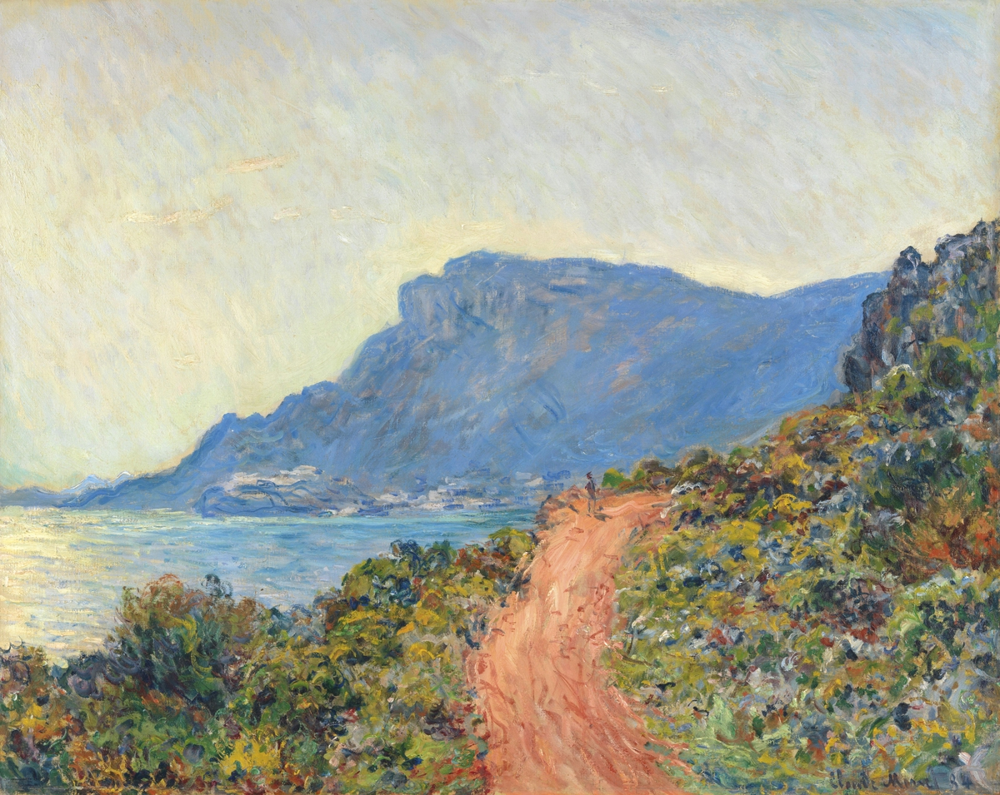
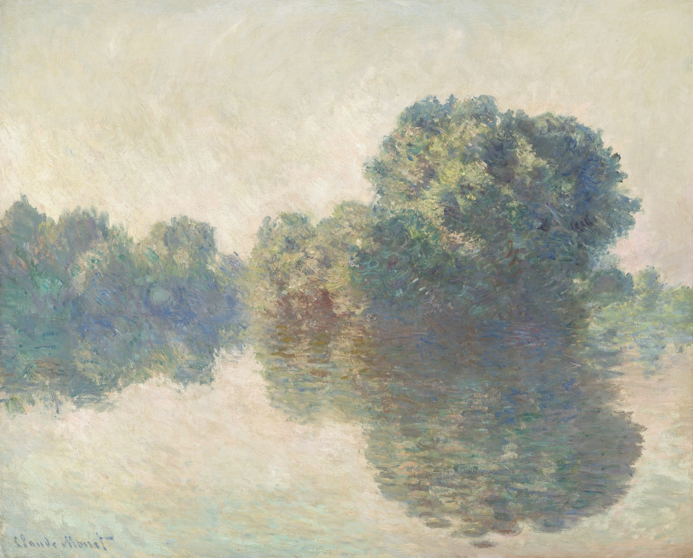
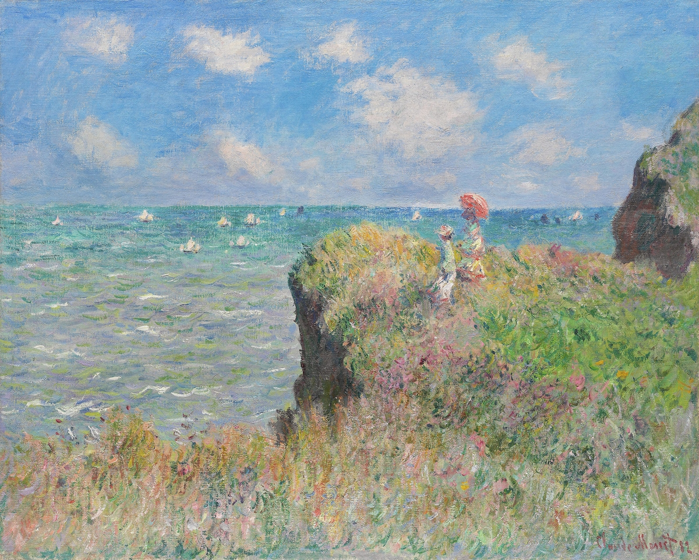

소개 관람·참여 전시 교육
인상주의 거장들과 함께하는
<모네, 빛을 그리다> 展
2025-05-02 ~ 2025-08-07
  
모든 작품 보기
공간 소개
보국산 끝자락에 자리잡은 코드이트 보국은 천혜의 자연 경관과 함께하며 그 자체로 지친 몸과 마음을 쉬게 해 줄 힐링의 공간입니다. 김수곤 건축가의 작품인 본 갤러리는 캔버스 화폭을 형상화하여 입면을 하늘로 가져 간 전시실이 특징이며, 한국의 전통 가옥을 연상시키는 천정과 부드러운 자연광이 들어올 수 있게 설계한 쾌적한 전시공간을 연출하고 있습니다.